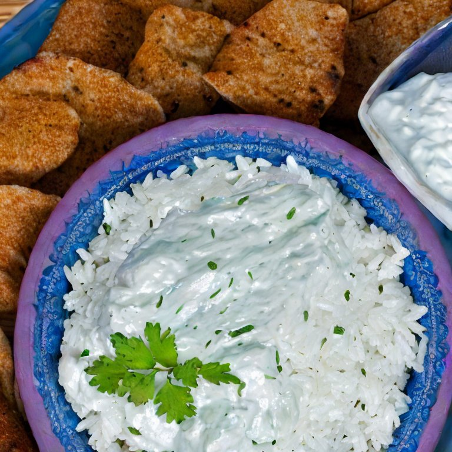

Rice and Tzatziki
Tzatziki is a delicious quick and easy dish to make.
Pair it with rice to make a filling meal full of flavor!
As delicious as this dish is, it is lacking in some areas of nutrition,
particularly protein, and it could use more vegetables. To make a complete
meal, I recommend a side salad with your choice of protein, or some healthy
appetizers on the side.
Ingredients
- Plain yogurt 1lb (Plain greek yogurt works just as well)
- Cucumbers 4
- Basmati rice 1 cup
- Garlic 5 cloves
- Dried mint 3 tbsp
- Salt 5 tbsp
Steps
Cook Rice
- Add 1 cup of water and the rice to a small pot and place over medium heat
- Once water begins to boil, turn heat to low and cover with lid
As water boils continue with the recipie.
Make the Tzatziki
- Peel then mince or mash garlic
- Wash dry and mince cucmbers
- Pour yogurt into a mixing bowl
- Add garlic and cucumber into the bowl
- Crush dried mint if you don't have tools for this step,
you can use your hands. Wash and dry your hands,
place the mint in one hand, then over the mixing bowl,
rub hands back and forth until mint is a fine dust
- Add salt and mix well.